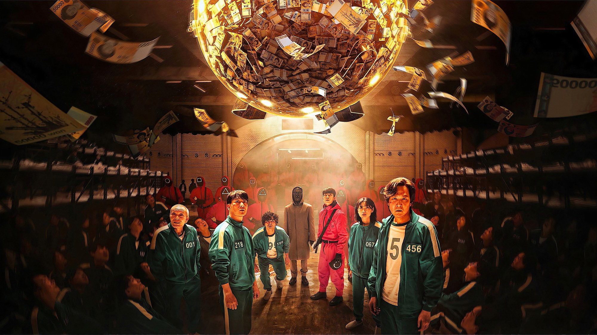

Squid Game – Stagione 1
Giochi da cortile e debiti veri: perché il primo ciclo di Hwang Dong-hyuk regge meglio dei due che l'hanno seguito
Il momento più crudele della prima stagione di Squid Game non ha spari né sangue. Due uomini in tuta verde giocano a biglie in un vicolo finto, e il più giovane imbroglia il più vecchio. È lì che capiamo cosa vuole Hwang Dong-hyuk: non spaventarci con la morte, ma metterci a disagio con quello che saremmo disposti a fare per non morire.
Per questo, secondo noi, i primi nove episodi restano i migliori della serie. Sono una storia chiusa, in cui ogni gioco costringe qualcuno a una scelta morale e ogni personaggio ha il tempo di diventare una persona prima di sparire. I difetti ci sono, e li diremo più avanti, però il seguito li ha ingigantiti invece di correggerli.
Di cosa parla la prima stagione di Squid Game?
Seong Gi-hun (Lee Jung-jae) è divorziato, sommerso dai debiti e incapace di smettere di scommettere. Un giorno, in una stazione della metropolitana, un uomo in giacca e cravatta lo sfida a ddakji, il gioco delle tessere di carta da ribaltare, e poi gli lascia un biglietto da visita. Gi-hun chiama il numero. Quando si sveglia è in un dormitorio con altre 455 persone indebitate quanto lui, ognuna con un numero sul petto, mentre le guardie in rosa nascondono il volto dietro un cerchio, un triangolo o un quadrato.
Il montepremi è enorme, ma le prove sono i giochi dei bambini coreani, fino al «gioco del calamaro» che dà il titolo alla serie. Accanto a Gi-hun ci sono l'amico d'infanzia Cho Sang-woo (Park Hae-soo), ricercato per frode, e Kang Sae-byeok (Jung Ho-yeon), fuggita dal Nord. Poi il lavoratore pakistano Ali (Anupam Tripathi) e il giocatore 001, un vecchio malato a cui O Yeong-su dà una dolcezza che spiazza.
Cosa funziona: i momenti che restano
Il primo è il più famoso. Nell'episodio d'apertura i 456 giocatori entrano in un grande campo, e una bambola gigante canta la filastrocca del gioco che da noi si chiama «Un, due, tre, stella». Chi si muove quando lei si gira viene eliminato, e la serie mostra subito cosa vuol dire la parola. La bambola riprende Young-hee, la bambina disegnata sulle copertine dei libri di scuola coreani degli anni Settanta e Ottanta: quindi il terrore arriva con la faccia dei ricordi d'infanzia, ed è proprio questa la firma visiva della stagione.
Il secondo è meno citato, ma per noi conta di più. Nell'episodio 2, «Inferno», i giocatori votano a maggioranza per interrompere i giochi e tornano a casa. La serie allora li segue fuori, dove i debiti li aspettano, perciò quando molti decidono di rientrare nell'arena il messaggio arriva senza bisogno di discorsi. William Hughes su The A.V. Club ha scritto che la crudeltà di un sistema costruito per rendere la partecipazione l'unica scelta «ragionevole» è il cuore della visione anticapitalista della serie. Siamo d'accordo, perché è questo che la fa durare nel tempo.

La scena che vale la stagione: il vicolo delle biglie
Nel sesto episodio, «Gganbu», i giocatori formano le coppie convinti di dover collaborare, ma scoprono solo dopo che dovranno sfidarsi: chi prende tutte le biglie dell'altro sopravvive. Gi-hun finisce con il giocatore 001 in un vicolo di case basse, sotto un cielo dipinto sui muri. Il vecchio sembra perdersi nei suoi ricordi, e Gi-hun ne approfitta per strappargli le biglie una per una. Però il vecchio se ne accorge, e continua lo stesso a chiamarlo «gganbu», la parola coreana per l'amico con cui si divide tutto. Lee Jung-jae tiene la scena quasi solo con gli occhi, e il suo Emmy nasce qui.
C'è un retroscena che cambia il modo in cui la guardiamo. La scenografa Chae Kyoung-sun ha costruito il vicolo come una fila di piccoli palcoscenici, ognuno dei quali rappresenta un pezzo dei ricordi del giocatore 001. Per i cieli dipinti sui muri si è ispirata alla serie «L'impero delle luci» di René Magritte, dove il giorno e la notte convivono nello stesso quadro. Quel cielo immobile, quindi, è la memoria del vecchio messa in scena, e Gi-hun lo inganna dentro i suoi stessi ricordi.
La nostra sintesiHwang ci mette in mano le biglie di un altro, e la domanda su cosa farne resta a noi.
Dove non convince
Il punto debole più evidente è la storia del poliziotto Hwang Jun-ho (Wi Ha-joon), infiltrato tra le guardie per cercare il fratello. Ogni volta che la serie torna da lui la tensione cala, perché il dietro le quinte che ci mostra arriva per strade prevedibili. Mattia Manneschi su Everyeye la indicava già nel 2021 come la trama secondaria più scontata, e a distanza di anni il giudizio regge.
Anche i VIP, gli spettatori ricchi che arrivano sull'isola nell'episodio 7, funzionano poco. L'idea è giusta, cioè mettere davanti al pubblico chi si diverte con la sofferenza degli altri, ma secondo noi i dialoghi in inglese e la recitazione rigida li riducono a caricature. Così il ponte di vetro dello stesso episodio, una delle prove più tese della serie, perde forza ogni volta che il montaggio stacca su di loro.
Resta il finale, che lascia sentimenti divisi. La resa dei conti sul campo disegnato del calamaro, nel nono episodio, è bellissima. Le scene successive, invece, contengono una rivelazione che chiede molta indulgenza e un'ultima scena costruita per lasciare la porta aperta a un seguito. Manneschi parlava di una fase conclusiva «forzata», e noi aggiungiamo che proprio quei minuti hanno impostato tutto ciò che è venuto dopo.
Squid Game e i suoi modelli, poi il seguito
Hwang ha citato tra le sue ispirazioni i fumetti giapponesi come «Battle Royale» e «Kaiji», storie di persone costrette a giocarsi la vita. La differenza però sta nel punto di partenza. In «Battle Royale» il governo deporta i ragazzi su un'isola, mentre in Squid Game i giocatori firmano e nell'episodio 2 tornano di loro volontà. La violenza del genere resta, ma la colpa si sposta su un sistema economico che rende quella firma sensata, ed è qui che la serie trova la sua voce.
Il confronto con il seguito spiega perché il primo ciclo resta il punto più alto. Qui i giocatori principali sono pochi, e ognuno ha un'ora intera per farsi conoscere. Il seguito invece è nato come un unico racconto poi spezzato in due, e lì i concorrenti nuovi sono molti di più e alcuni restano abbozzati, mentre le trame fuori dall'arena si allargano: è il difetto di Jun-ho, moltiplicato. Lo abbiamo scritto nella <a href="/squid-game-stagione-3-recensione.html">recensione della terza stagione</a>.
C'è poi una differenza di sguardo. All'inizio Gi-hun è uno di noi, anche un po' meschino, quindi guardiamo i giochi dalla sua altezza. Dopo diventa un uomo con una missione, e allora la serie perde quella complicità scomoda che ci faceva chiedere cosa avremmo fatto al suo posto.
I numeri di un fenomeno
Hwang aveva scritto la storia più di dieci anni prima, ma in Corea gliela rifiutarono perché la giudicavano troppo grottesca e irrealistica. Netflix l'ha acquistata nel settembre 2019, con un budget di 21,4 milioni di dollari per la stagione. Secondo la piattaforma, la serie ha raggiunto 111 milioni di account in 17 giorni e 142 milioni in 28, con 1,65 miliardi di ore nel primo mese, ed è arrivata in testa alle classifiche di 94 Paesi. Agli Emmy del 2022 ha ottenuto 14 candidature, prima serie non in inglese in gara come miglior drammatica, e Lee Jung-jae ha conquistato il premio come attore protagonista: è il primo attore asiatico a riuscirci con un ruolo non in inglese. O Yeong-su aveva già portato a casa il Golden Globe. Nel settembre 2021 Everyeye dava alla stagione 8 su 10; a ottobre 2026 su Rotten Tomatoes le recensioni positive sono il 95% su 77, mentre su Metacritic la media è 69 su 100.
Vale la pena guardarla, o riguardarla?
Secondo noi sì. Se non l'avete mai vista, questi nove episodi si reggono da soli e potete fermarvi lì, perché la storia è completa. Se invece l'avete già scoperta nel 2021, riguardarla dopo il seguito rivela quanto fosse costruita con precisione, dalla bambola del primo episodio al vicolo delle biglie. Non la consigliamo a chi non sopporta la violenza esplicita, perché la serie non risparmia nulla. La trovate su Netflix, con il doppiaggio italiano.
La prima stagione di Squid Game resta il capitolo migliore perché, nel vicolo delle biglie, ci costringe a guardarci nelle mani di Gi-hun.
Domande frequenti
Quanti episodi ha Squid Game 1?
Nove, pubblicati tutti insieme su Netflix il 17 settembre 2021.
Si può guardare solo il primo ciclo di Squid Game?
Sì, perché racconta una storia completa. L'ultima scena apre al seguito, ma i capitoli 2 e 3 sono un racconto a parte.
Quali premi ha ottenuto Squid Game 1?
Agli Emmy 2022 Lee Jung-jae ha conquistato il premio come attore protagonista in una serie drammatica, su 14 candidature totali; O Yeong-su ha portato a casa il Golden Globe.
Dove vedere Squid Game 1?
Su Netflix, con il doppiaggio italiano, insieme ai due capitoli successivi.